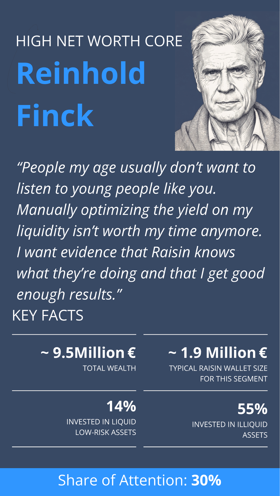
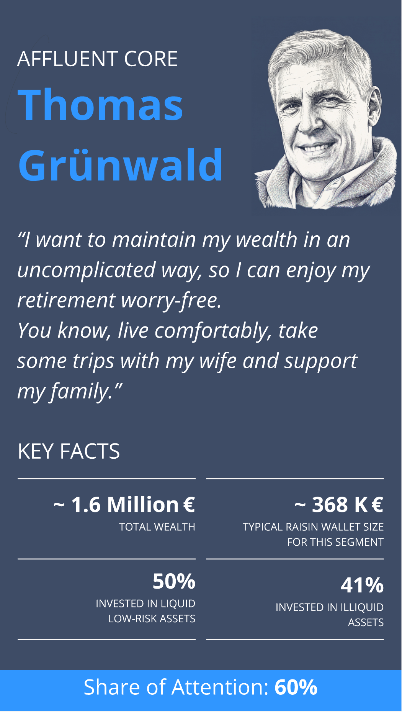
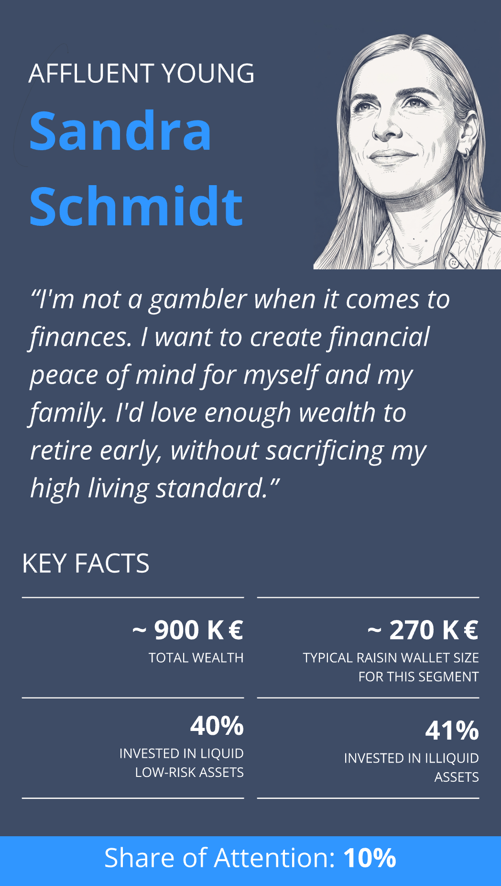
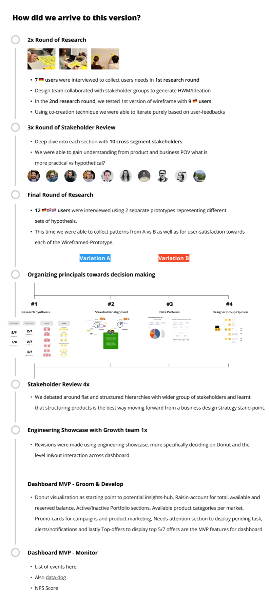
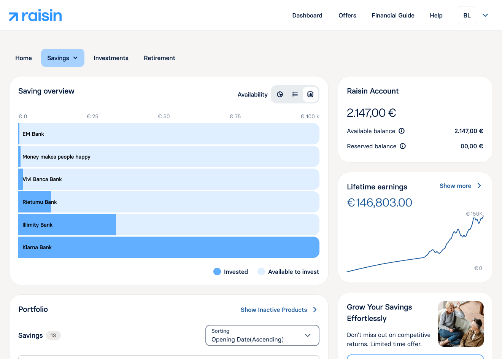
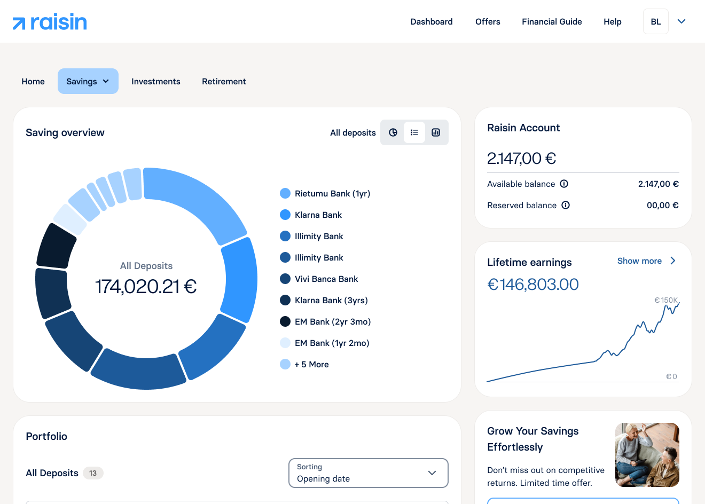

01
A fragmented product experience
Customers experienced Raisin differently depending on where they landed: a legacy web dashboard, a mobile app that didn't mirror it, and emails that looked like a different brand entirely.


🔒 Protected case study
The Raisin brand evolution case study is password-protected. Enter the password to continue.
Two tracks run in parallel — Practice on the product, Enablement for the team. Measured honestly, not just shipped.
The why
The ambition was real: a new identity, a new product experience, growth across markets. But the work behind the scenes wasn't built to move as one system. Each gap was survivable alone. Together, they were a ceiling.
01
Customers experienced Raisin differently depending on where they landed: a legacy web dashboard, a mobile app that didn't mirror it, and emails that looked like a different brand entirely.
02
Brand agency Koto delivered a static identity. After handoff, Raisin's design team had to apply the new visual identity and evolve the entire product experience into a new cohesive brand.


03
User studies were rare, static designs were default to showcase and design critiques weren't happening. Every handoff paid a tax for it.


The journey
I diagnosed problems in the product experience and in how the team worked, then built discovery and enablement in parallel — and measured both honestly. Each chapter follows the work chronologically; where a project also built lasting team capability, it's called out as Enablement.
Practice
Direct discovery — research-led product decisions, shipped screens, measured outcomes.
Enablement
What the team gained — rituals, research infrastructure, documentation, tooling, coaching.
Joined mid-rebrand, with the dashboard still reading as Weltsparen — the legacy brand name — in customers' heads. Settled the hierarchy question with two rounds of research, shipped the Wealth Hub MVP across 12 markets — and systemized it with a product colour map and the team's first evidence rituals.


Agency rebrand · Koto
I joined as the product was still known as Weltsparen in customers' minds, and the first brief wasn't a dashboard — it was absorbing agency Koto's static identity and working out what it would take to carry it into a live, multi-market product.
Finding signals in the noise:
Flat product list or asset-class hierarchy? Two research rounds and workshops turned evidence into organizing principles — the validated structure shipped as the Wealth Hub MVP with the brand evolution.
Savings, Investments, Retirement — one structured hierarchy, live across 12 markets
Rejected: a flat, single-list dashboard — faster to ship, and favoured internally early on.
“Too much Raisin, too little me — I expect to see my product upfront.”
“Treemap is difficult to understand for me, not intuitive — a doughnut or a bar chart would be more understandable for me.”
“Would like to see positive news like ‘Since the last login you earned xxx €…’ or ‘10k are available again — you can invest now.’”
“Country rating is important to me; Raisin should ask me about my preference.”
38 participants · 2 rounds · 🇩🇪 🇳🇱 🇬🇧 🇪🇸 🇫🇷



After MVP launch
Tested across three segments pre-launch; confirmed at scale post-launch.
Report they can better understand and manage their wealth — full breakdown in Proof
Dashboard / design NPS moved clearly positive across DE, NL, ES, and PL
“Everything works great. I especially like the drill-down graphics — Overview → Fixed deposit → individual bank. That’s how every website should work.”
“At first glance it’s excellent: everything you need is right there, and it’s very intuitive.”

Wealth Hub · systems
The hierarchy needed more than layout — each asset class needed a distinct, accessible colour identity that held up across markets and themes. Savings in blue, investments in amber, retirement in green — mapped token-by-token, with rules for savings-only markets where the same hues remap to product types. Documented in Confluence so engineering, markets, and design shipped from one source.
12 markets · 3 market-type rules · light + dark token specs
All products
Savings + investment
Savings-only


Email as a product
Email was a pile of one-off reskins with no shared point of view. I mapped how competitors and adjacent fintechs handled transactional vs. marketing email, then rebuilt the surface as a governed, atomic system — collecting the distinct use cases first and designing for each, so nothing had to be compromised on content. Through implementation I bridged the gap between the target state and what Bloomreach could actually render, and carried the same system into the Weblayer templates.
Master-template concept · spans every marketing & transactional use case
Rejected: one more one-off template instead of a system.
Enablement
When the design team moved from Sketch to Figma, the tooling changed but shared files didn't — covers, page setup, and frames were still inconsistent. A few designers had already started working with a similar structure. I hosted a retro so we could name what wasn't working, then turned the answers into one duplicable file. It's since become how the team starts every project.
Team standard · confirmed in Q4 2024 retro
Rejected: a guidelines doc for a problem the team hadn't agreed on yet.
The dashboard needed the controls customers were actually asking for, and the team needed to stop relying on intuition. I shipped post-MVP features, ran Raisin's first controlled design experiment — and wrote the ways of working and research playbooks the org still runs on.

Web dashboard · post-MVP
After Wealth Hub went live across 12 markets, the MVP launch survey showed customers still needed more — ways to sort deposits, see holdings by bank, monitor country-level exposure, and track maturities on a timeline. I mapped those signals to a post-MVP plan, then shipped in sequence: filtering first, a zero-state experiment second, Raisin Wrapped third.
3 post-MVP releases · each measured against the framework
MVP launch survey · top customer signals
“Show utilization per country so customers can monitor deposit-insurance limits.” Germany
“A summary of totals showing how much I have invested per bank.” Germany
“The dashboard should show the next maturing deposit first, not in random order.” Netherlands
“A calendar view showing when the next interest payments are due.” Germany
Shipped in response — in chronological order:
Filtering
Customers didn't all read their money the same way — by category, all deposits, or country, with availability layered in.
Product ship — category, deposits, or country, plus availability, spec'd to production.


Zero-state
New sign-ups landed on a blank screen with nothing to orient them before their first deposit.
Feature-flag A/B test — donut-carousel vs. empty dashboard in ES & NL.
Raisin Wrapped
A moment that reflected their year of saving — not the brand talking about itself.
Design initiative — six-screen year-in-review from concept to launch.


Rejected: shipping each release as a one-off, without a shared view of what customers still needed.
Enablement
Principles of Prototyping gave Design and Product a shared language for fidelity — what belongs in a wireframe, what earns a clickable flow, when to invest in realistic data. I co-led the Figma Make × AI rollout with Product: boilerplates, annotated examples, and guidelines showcased in cross-functional sessions. Alongside the tooling, I coached a senior designer on prototyping craft and discovery — foundations first, then autonomy.
12-slide workshop · Figma Make × AI · ongoing 1:1 coaching
Research · operating model
User studies had been rare and German-only. Wealth Hub changed that — multi-market interviews, synthesis, stakeholder alignment. The MVP launch survey showed structured feedback at scale. I authored the research operating model: when to use interviews vs surveys, how participants are recruited through Bloomreach, hypothesis-first briefs, synthesis in Miro, and the compliance layer so legal and markets could sign off once, not per study.
6-step workflow · Bloomreach recruitment · Confluence playbook
The tribe split in two, the mobile redesign had stalled for months, and nobody had written down where the product was going. I took mobile end-to-end through a Maze study, authored the vision that gave design a horizon, and moved the team's craft bar on prototyping.

Desk research
Interaction data challenged the default plan: 25% donut, 42% portfolio-card, 33% tabs — evidence to push back on mobile-web replication before ideation started.

Web ↔ mobile parity
Took over a stalled programme and drove stakeholders toward mobile-first ideation — using what existed, not throwing it away.

IA + concept
Delivered Overview, Portfolio, Wallet, and Needs Attention end-to-end — plus entry cards, lists, and the app shell. Light and dark were designed in parallel, using colour tokens from the Wealth Hub system so the concept scaled across themes without a second pass. The allocation-rings visual landed through multiple stakeholder rounds, design critique, and aesthetic iteration in prototype — not a single static frame.


Maze validation
Ran a three-week Maze usability study end-to-end — compliance integration, execution, synthesis, retro. The integrated portfolio-card pattern reached 92.9% task success vs 71.4% on the tabbed alternative — enough confidence to iterate and ship. Flagged one open risk honestly: locating pending products split 42.9% / 57.1% between patterns.
92.9% vs 71.4% task success · validated before build

Lifetime earnings
Customers couldn't see cumulative earnings across everything in one place. I initiated the direction — adding the earnings widget to the dashboard — then built it out in collaboration with the Deposits domain. Multilingual verbatims confirmed the framing: lead with one cumulative number before any per-product breakdown.

Design vision · co-led with VP of Design
A shift from reporting what happened to helping customers decide what to do next. Cura — our internal vision codename — makes that future tangible: personalised, contextual, and grounded in everything Raisin already knows about a saver's money.
Gather → Envision → Plan workshop series · 8-slide narrative authored solo


What started as a prototyping workshop became design's 180-day operating plan. As one of four org-wide AI Champions, I built the toolkit, shipped four tools into daily use, and coached designers until the workflows stuck.

Origin
Figma Make × AI proved AI belonged on the fidelity spectrum — but it was still limiting. In fintech, placeholder figures break the illusion. I built a live prototype with global search, real data, and One Data persona modes so the team could visualize flows as users would see them. One Data was published to Confluence and adopted org-wide.
Live prototype → Confluence → 180-day operating plan
Programme
The VP of Design introduced a 180-day AI enablement programme so design could match engineering velocity. I championed design's operating plan from a design-engineering background — four Lab days a week to kick-start, then Showcase and Clinic sessions I led to make the workflows stick.
Kick-start Lab → Showcase + Clinic · 180 days

Design × Cursor toolkit
The programme was mostly coaching — the toolkit supported it.
Setup
Install Cursor, connect Figma MCP, and Git basics to get a repo running.
Rules
Shared .cursorrules — tokens, typography, accessibility, and One Data on every prompt.
Skills
Repeatable pipelines — design QA, annotate, and variant workflows.
Subagents
Specialist modes — component architect, design systems, state and theme sync.
Commands
One-shot shortcuts — clean, polish, build, sync, responsive, a11y.
Workflow
Iterate until clean — draft → polish → micro-fix → responsive → motion.
Project Registry · Examples · Confluence
Lab · 4-week sprint
A structured build sprint — Design QA, copywriting, typography, and prototype annotation — all in production use.


Cadence
Three designers coached on AI workflows — foundations first, then autonomy on live work. Still running regularly.
Weekly sessions I led — what we'd built, what was working, and how to adopt it on live work.
Open troubleshooting for Cursor setup, prompts, and workflow questions.
Proof
Some of this moved the numbers. Some of it didn't, and that's reported plainly too — the same standard applied everywhere else in this review.
Practice
Direct discovery — research-led product decisions, shipped screens, measured outcomes.
Enablement
What the team gained — rituals, research infrastructure, documentation, tooling, coaching.
The brand, built out
From static guidelines to a living system — across every touchpoint customers actually use.